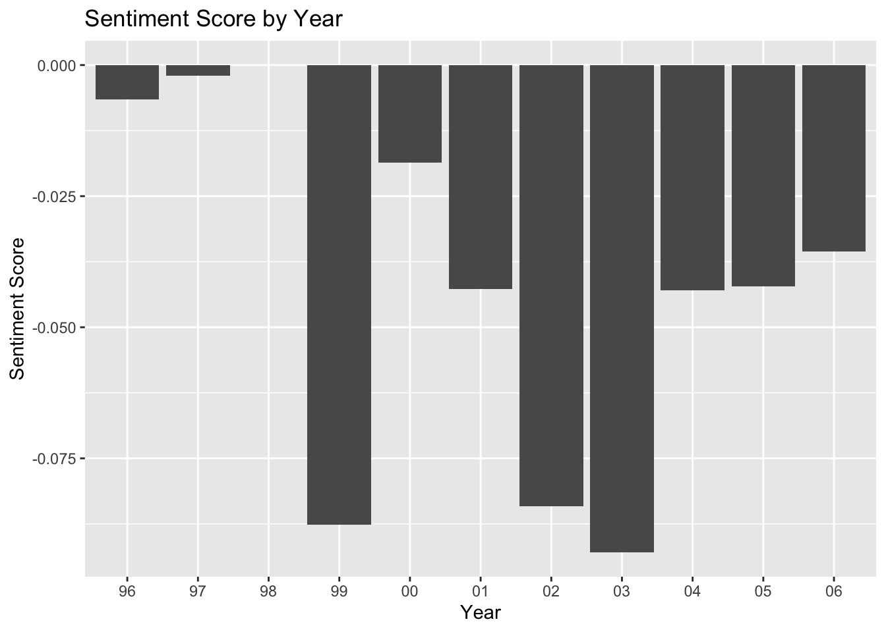

For my project, I decided to focus on answering he question: how does news reporting changed across a decade? To answer this question, I compiled New York Times headlines from 1996 - 2006 and analyzed how the most common words from headlines changed, as well as how the overal sentiment of headlines has changed over time.
library(RTextTools)
Loading required package: SparseM
Attaching package: 'SparseM'
The following object is masked from 'package:base':
backsolve
library(SentimentAnalysis)
Attaching package: 'SentimentAnalysis'
The following object is masked from 'package:base':
write
── Conflicts ────────────────────────────────────────── tidyverse_conflicts() ──
✖ dplyr::filter() masks stats::filter()
✖ dplyr::lag() masks stats::lag()
ℹ Use the conflicted package (<http://conflicted.r-lib.org/>) to force all conflicts to become errors
Warning in left_join(hl_byword, NYT_headlines, join_by("headline" == "Title")): Detected an unexpected many-to-many relationship between `x` and `y`.
ℹ Row 710 of `x` matches multiple rows in `y`.
ℹ Row 1 of `y` matches multiple rows in `x`.
ℹ If a many-to-many relationship is expected, set `relationship =
"many-to-many"` to silence this warning.
words <-function(data, num_year) { data |>mutate(year =str_extract(Date, "\\d\\d$"),word =tolower(word)) |>anti_join(get_stopwords(source ="snowball")) |>filter(year == num_year)|>count(word) |>arrange(desc(n))}words_96 <-words(full_df, "96")
From these three word clouds, we can detect mild differences in the most common words across years but all three contain very similar words.
sentiment_score <-analyzeSentiment(full_df$modified_title)with_sentiment <-cbind(full_df, sentiment_score)with_sentiment |>mutate(year =str_extract(Date, "\\d\\d$")) |>group_by(year) |>summarize(sentiment_per_year =mean(SentimentGI)) |>ggplot(aes(x = year, y = sentiment_per_year)) +geom_col() +labs(x ="Year", y ="Sentiment Score", title ="Sentiment Score by Year") +scale_x_discrete(limits =c("96", "97", "98", "99", "00", "01", "02", "03", "04", "05", "06"))
Warning: Removed 1 row containing missing values or values outside the scale range
(`geom_col()`).

This visualization shows the sentiment scores across years. I was interested to see whether major tragedies in this decade, such as 9/11, would impact the sentiment of each year. Though the decrease from 2001 to 2002 might be explained by this event, it might be unreasonable to state that the minimum sentiment score in 2003 can be attributed to 9/11. Additionally, there wasn’t really a pattern to this data, other than a steady decrease leading up to 2003 and an increase from then on. Note that 1998 does not have a score. Despite a deep dive into the values corresponding to 1998 trying to find any NA values, I couldn’t see why this year differed and was unable to produce a sentiment score.